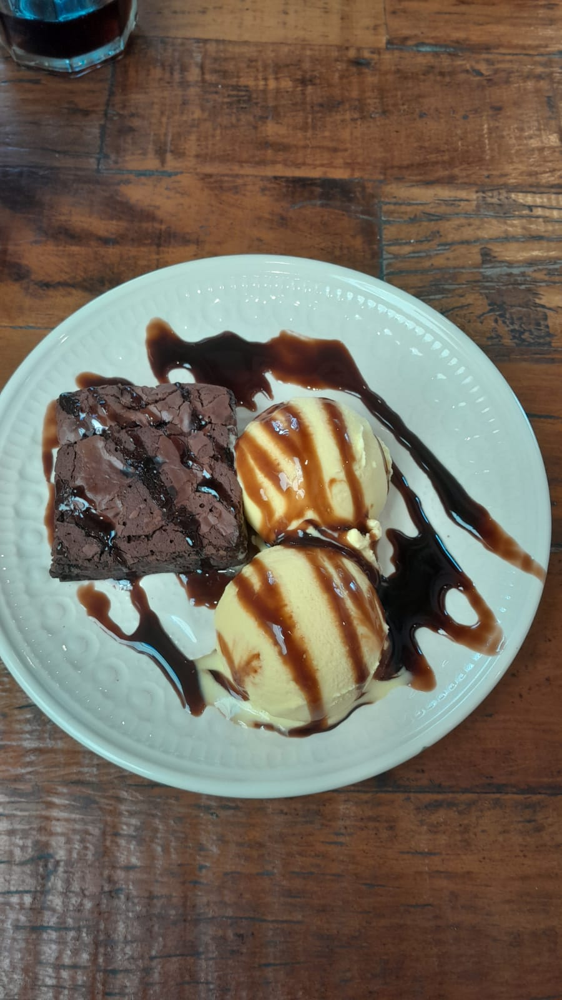

Oii, sou a Maria Beatriz, tenho 19 anos, sou de Votuporanga. Atualmente sou professora de robótica e faço alguns projetos com arduino por fora.
Apesar de mecher com robótica, eu sou apaixonada pela parte de back end, gosto muito de java e o meu sonho de trabalho atualmente é poder trabalhar nessa área.
Bom, eu gosto muito de motos do estilo custom (ex Harley Davidson), atualmente tenho uma custom (Deus é bom o tempo todo), falando sobre esse hobbie,
curto muito andar de moto, tipo, sair cedo para tomar café da manhã em outra cidade, coisas desse gênero. Atualmente estou pesquisando uma "mochila",colete, capacete e óculos para cachorros para levar meu cachorro na moto;

Meu segundo hobbie é jogar jogos, atualmente estou jogando muito "core keeper", mas também adoro lol, sou mono Morgana. OBS: Assista "Arcane", muito top!
Outro hobbie que eu tenho é ouvir música, amo muito, sou eclética, mas meu gosto musical predominante é tipo o de um "Pai divorciado", descubra o que seria o gosto musical de um "Pai divorciado" --> Músicas
Nos finais de semana, quando não estou derrotada pelo cansaço, curto dar uma de "masterchef", se liga nas minhas receitas --> Receitas da Mabe
De modo geral, amo motos, café, meu salsicha, vinho, jogos, ouvir música, fazer umas receitas legais e JAVA
Sou musicista desde os meus 11 anos, eu tocava violino, mas ai passei para o viloncelo e até hoje é o meu instrumento predominante. Outro instrumento que quero aprender é guitarra.
Tocar música me possibilitou muitas viagens à trabalho, fiquei um ano tocando em Rio Preto, fiz inúmeras viagens para tocar fora, até em outro Estado, já fui para a Praia Grande, Vargem Grande do Sul, entre outras cidades...
MODESTIA PARTE eu sou ótima em cozinhar doces, adoro fazer bolos entre outros docinhos;
Como eu gosto bastante de JAVA, estou tentando aperfeiçoar minhas habilidades